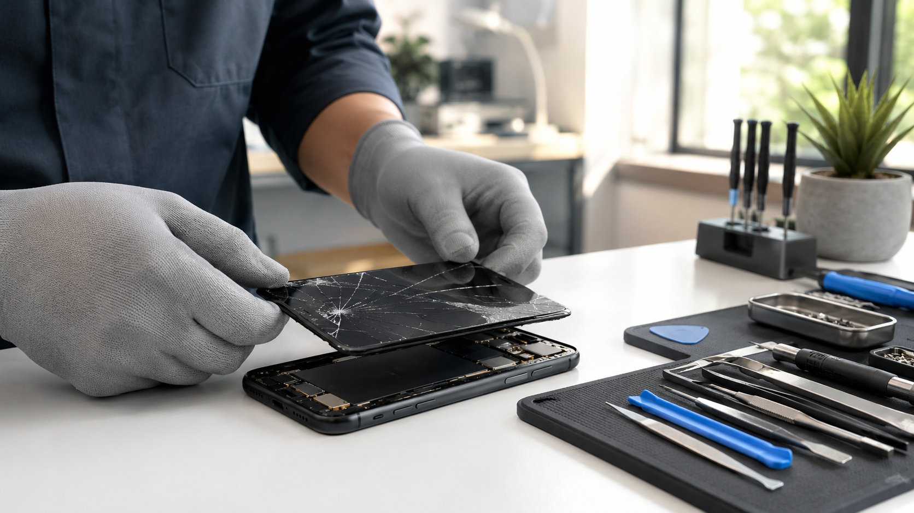

Same-Day Phone Screen Repair in Al Barsha

Clear Quote, Part Check, and the Fastest Route Into the Store
If your phone screen is cracked, flickering, showing black spots, or missing touch response, the best first step is to confirm the exact model and damage before you travel. PZM in Al Barsha helps customers understand whether same-day handling is realistic, what part path makes sense, and whether the repair is smarter than replacing the device.
What this page is for
This page is the practical route for Al Barsha residents who want screen repair guidance without guessing. If you need the wider repair overview, start from Device Care. If you want the detailed explanation behind timing, part quality, and common repair trade-offs, read our same-day phone screen repair guide.
When same-day handling is usually realistic
- The phone model is common and the matching screen is in stock
- The damage is limited mainly to the screen assembly
- The frame is not heavily bent and there is no deeper board damage
- You message the model and issue before visiting so the likely path is clear
What changes the timing
Repair timing is usually affected by model-specific part availability, whether the phone needs a full screen assembly or deeper work, and whether the impact also damaged the frame, camera area, or battery seating. That is why WhatsApp confirmation before the visit is the fastest way to avoid a wasted trip.
What to send before you visit
- Brand and exact model
- Whether touch still works
- Whether the display is black, flickering, or showing lines
- Whether the frame is bent or the back glass is also damaged
Repair or replace?
If the rest of the phone is still strong, a screen repair is often the most cost-effective move. If the device already has battery issues, charging faults, or is nearing the end of its useful life, we can help you compare the repair with tested replacement devices, new iPhone options, or a trade-in path before you commit.
Ask Before You Drive to the Store
Send the model, issue, and whether the screen still responds. We will help you understand the likely next step, whether same-day handling is realistic, and whether store drop-off is the right move from Al Barsha.
Useful Pages Before You Visit
Use the matching page for the next part of the decision if you want a faster route from research to action.
Phone Screen Repair Questions in Al Barsha
Can phone screen repair be completed the same day in Al Barsha?
Sometimes, yes. Same-day handling depends on the model, the required screen, the extent of the damage, and current workload after inspection.
Should I message before visiting for a screen repair?
Yes. WhatsApp is the fastest way to confirm the model, describe the issue, and understand whether same-day handling is realistic before you travel.
Do you explain the screen option and quote before the repair starts?
Yes. PZM inspects the device, explains the likely repair path, and confirms the quote before work begins so you can approve the next step clearly.
Should I repair the screen or replace the phone?
It depends on the rest of the phone's condition and how the quote compares with replacement options. We can help you compare the repair with new or tested used alternatives before you decide.